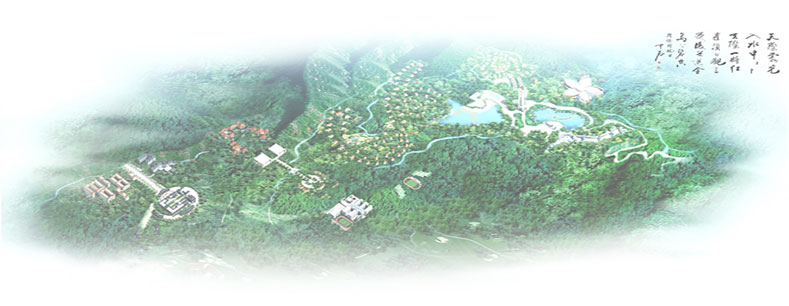

基金支持
未来影像俱乐部 亚洲国际青少年影像活动基地
“未来影像俱乐部”是由 “未来影像?亚洲国际青少年影像作品 展映活动组委会”发起设立，旨在为支持中国未来影像事业的发展，让更多的青少年有机会参与影像实践和学习以及国际文化交流与合作，为社会各界相关人士和企事业单位提供文化交流平台的会员制组织。
“未来影像俱乐部”、 “亚洲国际青少年影像活动基地”依托于“未来影像?亚洲国际青少年影像作品展映活动组委会”在国内外的影响和行业内的优势，以未来影像俱乐部网站为平台，以“未来影像?亚洲国 际青少年影像作品展映活动组委会”组织的各项活动为主线，以海内外专业艺术院校、影视制作基地、制作公司等为支撑，凭借顶级的 乐部专家指导委员会，为会员搭建一个学习、实践、 交流合作、互动共享的高端平台，提供高效、全面、优质的技术技能培训、专业指导、信息服务以及其他专业化的增值服务， 以加强海内外青少年之间相互交流学习、 青少年与海内外专家、名流之间的交流互动，更好地促进中国未来影像事业的发展。同时，突出青少年清新、活力、未来、希望得特点，真正做到社会效益、人文效益、生态效益、开发等效益得和谐统一，打造具有国际影响力得国家级青少年活动基地。
目前，首个“亚洲国际青少年影像活动基地”正式落户中国广东梅州鹿湖山文化产业园区 。
